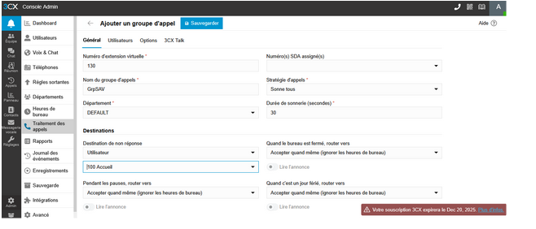
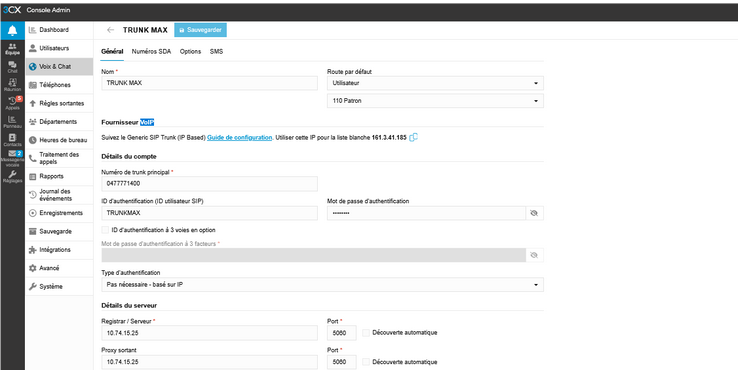

Déploiement d'une infrastructure de téléphonie IP
Introduction : Ce projet simule l'interconnexion des services de communication vocale d'une entreprise disposant de plusieurs agences distantes, nécessitant l'unification des plans de numérotation.
🎯 Apprentissages Critiques :
- Compétence ROM2 : Mettre en œuvre le système de téléphonie
- • AC25.01ROM : Choisir une architecture et déployer des services de ToIP
- • AC25.02ROM : Administrer un service de téléphonie pour l'entreprise
1. Description du projet
Le travail consistait à déployer un IPBX 3CX sur une machine Debian. J'ai configuré l'ensemble des règles de routage des appels, créé les comptes utilisateurs (extensions SIP) pour les terminaux, et interconnecté le système via un Trunk SIP. La priorité résidait dans le respect de la sécurité des accès et la mise en œuvre d'un plan de numérotation cohérent.
2. Présentation et justification des résultats
Les tests de validation démontrent le bon fonctionnement du routage. Les flux audio circulent de manière bidirectionnelle sans coupure grâce à un paramétrage adéquat du pare-feu.

Preuve 1 : Tableau de bord affichant le statut connecté des postes SIP.

Preuve 2 : Journal attestant de l'enregistrement réussi du Trunk inter-sites.
3. Conclusion & Analyse Réflexive
📊 Auto-évaluation :
Je valide l'acquisition des AC25.01ROM et AC25.02ROM. Le livrable est fonctionnel et j'ai su mener à bien les tâches d'administration et d'interconnexion réseau en autonomie.
🧠 Analyse Réflexive :
Difficultés & Résolutions : Lors des tests, j'ai fait face à un problème d'absence d'audio d'un côté de la communication (One-Way Audio). L'analyse des paquets via Wireshark m'a forcé à me replonger dans les mécanismes du NAT. J'ai compris que le pare-feu bloquait les ports RTP dynamiques. En ajustant le mappage des ports, le trafic s'est stabilisé.
Recul sur mes apprentissages : Cette SAÉ m'a fait réaliser que la VoIP exige une maîtrise parfaite de la couche réseau sous-jacente (routage, pare-feu).